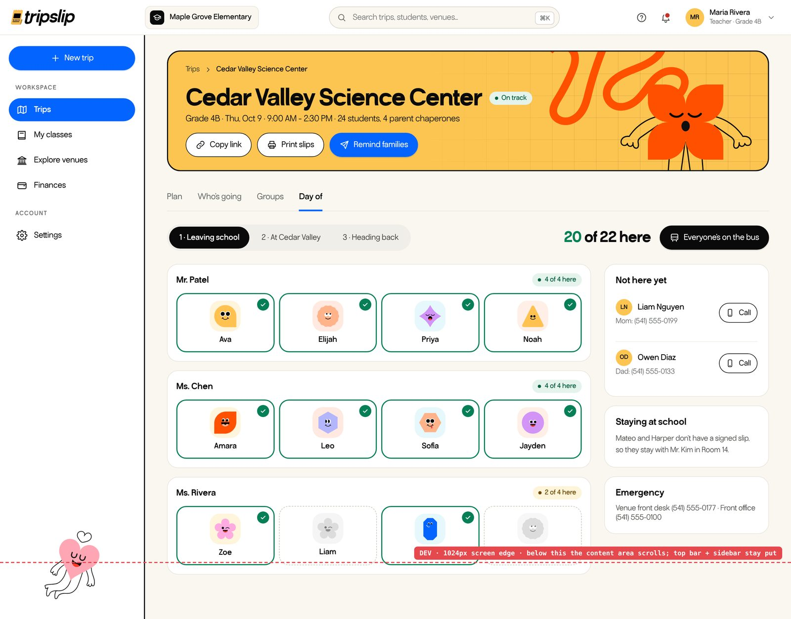

TTripSlip
One field trip, four sides to design for
Schools, parents, venues and bus companies each get their own view. Working with the product owner, I built the information architecture, a developer spec, the UI kit and 140+ screens.
Read the case studyOne field trip.

Product design · IA · UI kit01 / 05